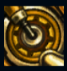
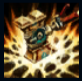
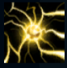
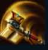
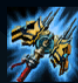

Jayce
| Jayce The Defender Of Tomorrow | |
|---|---|
| Release date | 07.07.2012 |
| Class | Artillery |
| Positions | Top |
| Resource | Mana |
| Range type | Melee |
| Adaptive type | Physical |
| Base statistics | |||
| Health | 500 – 1690 | Mana | 380-1438 |
| Health regen. | 6.5 – 16.7 |
Mana regen. | 7.5-16.85 |
| Armor | 38 – 70 | Attack damage | 52 – 99.6 |
| Magic resist. | 30 – 38.5 | Crit. damage | 175% |
| Move. speed | 335 | Attack range | 125 |
Jayce este un inventator genial care a jurat să protejeze Piltoverul pe calea spre progres. Avându-și mereu la îndemână ciocanul hextech transformabil, Jayce își folosește puterea, curajul și inteligența extraordinară pentru a-și apăra orașul natal. Deși cei din jur îl consideră un erou, lui nu-i place să i se acorde atenție din cauza asta. Însă are intenții bune și chiar și cei care-i invidiază talentul sunt bucuroși să se afle sub protecția lui. |  |
CONDENSATOR HEXTECH Când Jayce își schimbă arma, primește un scurt bonus la viteza de mișcare. |
||
|---|---|---|---|---|
 |
PÂNĂ LA CER! / SUFLU DE ȘOC Ipostază de ciocan: sare până la un inamic, provocându-i daune fizice și încetinind adversarii. Ipostază de tun: trage o sferă de electricitate care explodează la impactul cu un inamic (sau la capătul traseului), provocându-le daune fizice tuturor inamicilor loviți. |
|||
 |
CÂMP DE FULGERE / HIPER ATAC Ipostază de ciocan - Pasivă: reface mana la fiecare lovitură. Activă: creează un câmp de fulgere, provocându-le daune inamicilor aflați în apropiere timp de câteva secunde. Ipostază de tun: obține o răbufnire de energie care crește la maxim viteza de atac pentru câteva atacuri. |
|||
|  |
SUFLU DE TUNETE / POARTA ACCELERĂRII Ipostază de ciocan: provoacă daune magice inamicilor și îi împinge în spate, pe o distanță mică. Ipostază de tun: creează o poartă a accelerării care crește viteza de mișcare a tuturor campionilor aliați care trec prin ea. Dacă ''Suflul de șoc'' trece prin această poartă, viteza, raza de acțiune și daunele cauzate de proiectil vor crește |
|||
 |
TUN DE MERCUR / CIOCAN DE MERCUR Ipostază de ciocan: transformă ''Ciocanul de mercur'' în ''Tun de mercur'', câștigând noi abilități și rază de atac mărită. Primul atac în această formă reduce armura și rezistența la magie a țintei. Ipostază de tun: transformă ''Tunul de mercur'' în ''Ciocan de mercur'', câștigând noi abilități și crescând armura și rezistența la magie. Primul atac în această formă provoacă daune magice suplimentare. |